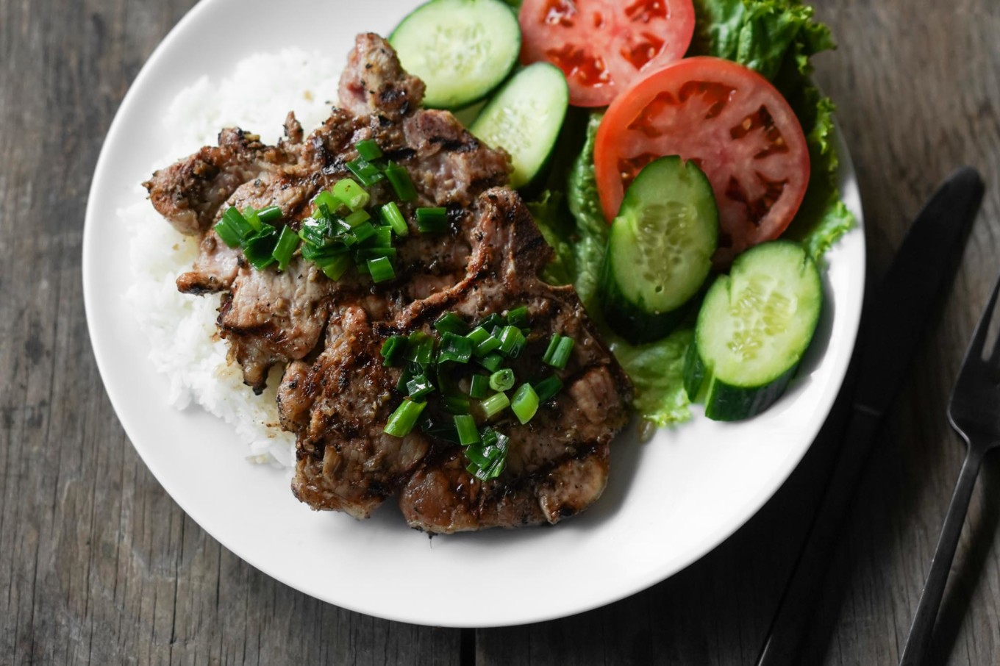

Pork Chops
(Content taken from here.)

Pork chops
This quintessential rice dish of Vietnamese pork chops is
packed with flavor, super easy to make, and a crowd pleaser!
The marinade adds a ton of garlicky, lemongrassy flavor that
pairs great with the pork chops. Grilling adds an amazing
aroma and sear, and as if the chops aren’t flavorful enough,
they’re topped with scallions & oil.
Ingredients
- 2lb pork chops
- Marinade
- 3 tablespoons sugar
- 2 tablespoons soy sauce
- 2 tablespoons fish sauce
- 1/2 teaspoons of MSG
- 4 tablespoons neutral cooking oil
- Marinade Aromatics
- 6 tablespoons lemongrass, minced
- 2 tablespoons garlic, minced
- 2 tablespoons shallots, minced
- Veggies and Garnish
- 1 tomato, sliced
- 1 cucumber, sliced
- 6 leaves green leaf lettuce
Steps
- Rinse pork chops under running water and lightly scrub
with salt. Pat dry with paper towels.
- Combine all marinade ingredients in a medium mixing bowl
and stir to combine and dissolve sugar and MSG. Then add
the Marinade Aromatics.
- Marinade the pork chops in a bowl or bag in the fridge
for at least 3 hours, but ideally overnight.
- Remove the chops from the marinade and discard the extra
liquid–you can keep the aromatics on that stuck to the
chops though.
Cooking:
- Grill on a BBQ, giving at least 1-2 inches spacing
between each chop. Sear on high heat for browning or grill
marks for a few minutes, then lower to medium heat and
cook on both sides, flipping often until cooked all the
way through. When done, the pork should read 145 °F using
an instant read thermometer at the thickest part of the cut.
- Pan fry: 1-2 chops at a time on medium to medium
high heat without crowding the pan. When done, the pork
should read 145 °F using an instant read thermometer at
the thickest part of the cut.
- In the oven: Bake at 375 °F for 15-20 minutes
until the internal temperature of the meat hits around
135 °F. Lower the rack and broil, flipping a few times
during broiling, to get nice coloring on both sides.
Again, the pork is done when the internal temp reaches
145 °F.
- Serve with a side of rice, veggies & garnish, and nuoc
cham (dipping/prepared fish sauce).